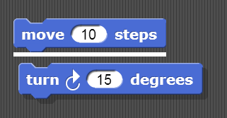
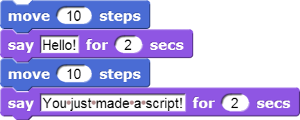
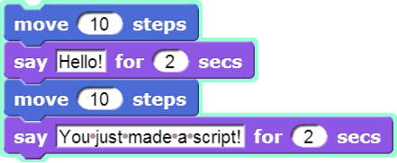

2. Scripts
Now that you have figured out how to make a sprite move, you might be wondering how to make the sprite do other things as well.
To make a sprite do more than just move, we need to use different types of blocks and link them together. You can link blocks by snapping (hence the name snap) them together -- drag a block right underneath the one to which you want to attach it. Blocks will snap together when one block’s indentation is near the tab of the one above it. You should see a white bar appear like the one in the image below, which just shows you where the block will go after you drop it.

If you keep attaching blocks together in this way, you will create a script. A snap program consists of one or more of these scripts.
Try recreating the following script in the scripting area in snap. You will find the block in the Looks tab.

What will happen if you run this script? Remember, a script will tell the sprite what to do. Click on the script and see what happens! You will know that your script is running if it has a highlighted border around it, as in the image below:

This exercise is to show you that the blocks in a script run in a specific order, from the top of the script to the bottom. Your script will finish running one block before continuing on to the next one below it. Knowing this, you can plan out your scripts so that you can make something happen before another thing happens. Keep this in mind when you make scripts in the future! It will help you understand what is going on in case something you have made is not working correctly.